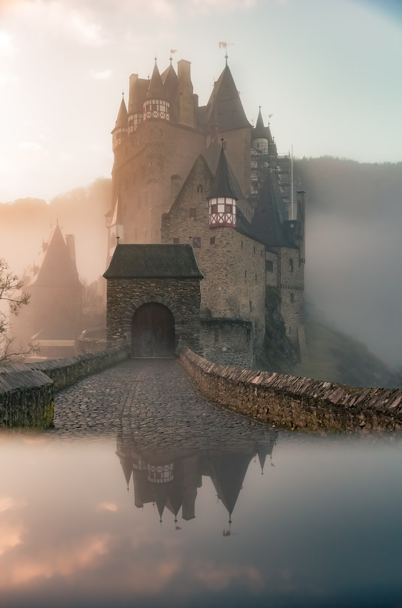

Malte — La Valette, quelle merveille


La Valette est probablement la plus belle ville qu'on ait vue. Les fortifications, les eglises baroques, les couleurs... On a pris une journee complete pour visiter.
Le port de Marsaxlokk est plein de luzzu colores. Les gens sont incroyablement gentils.